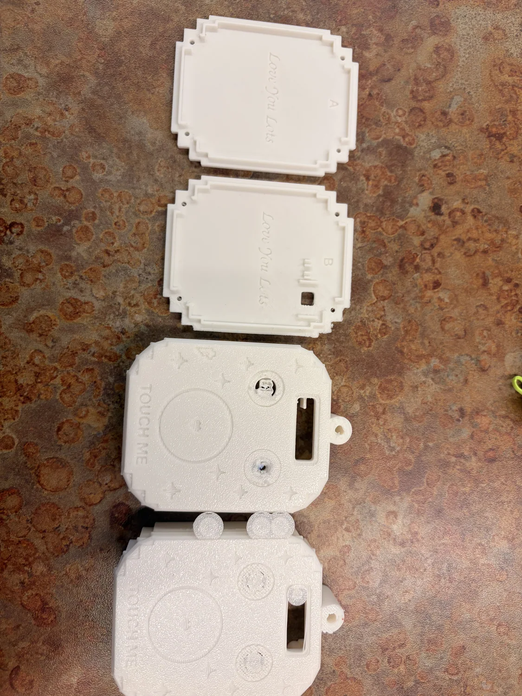
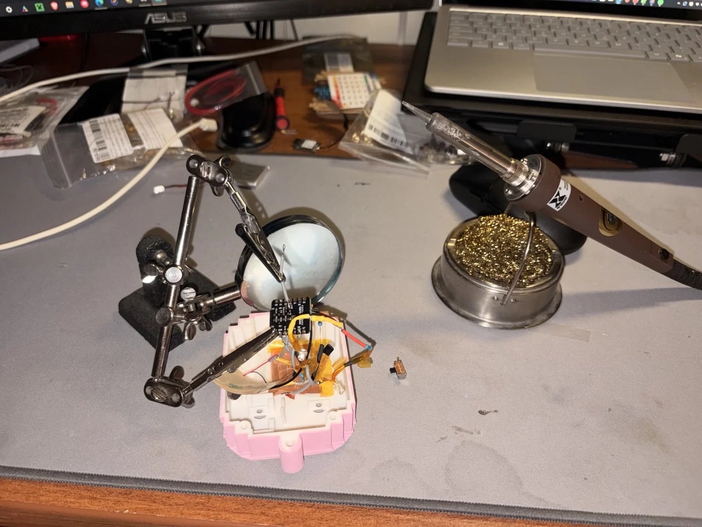
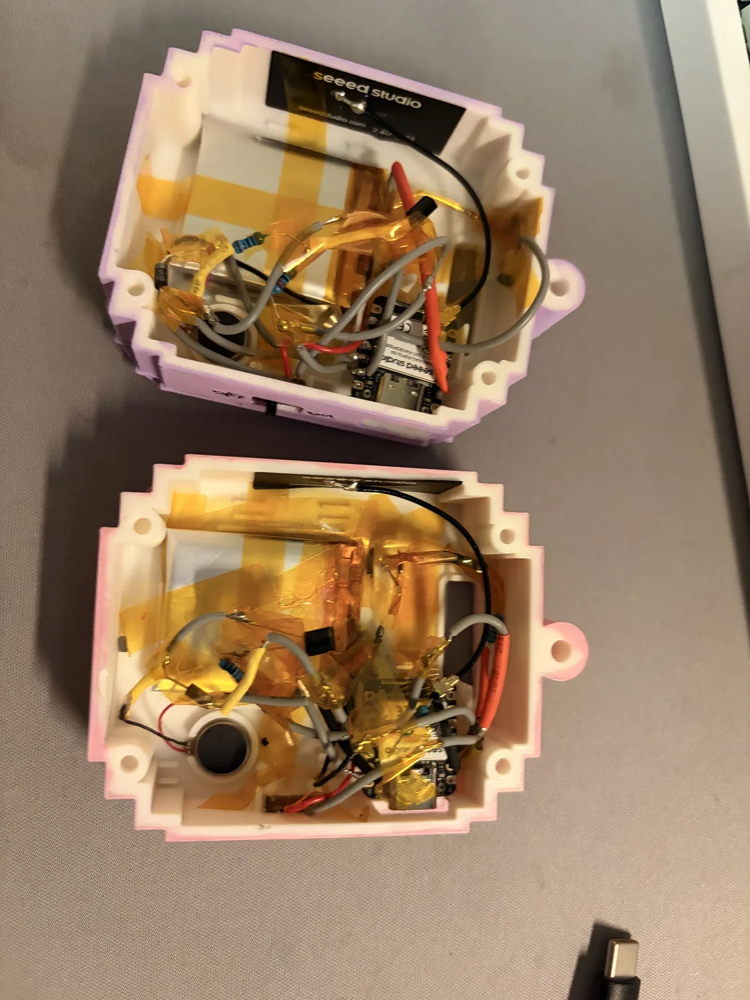
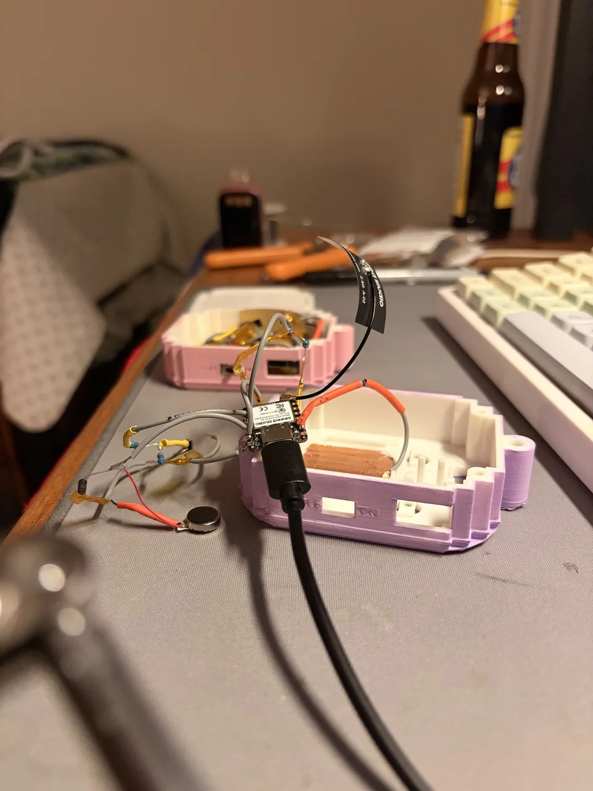
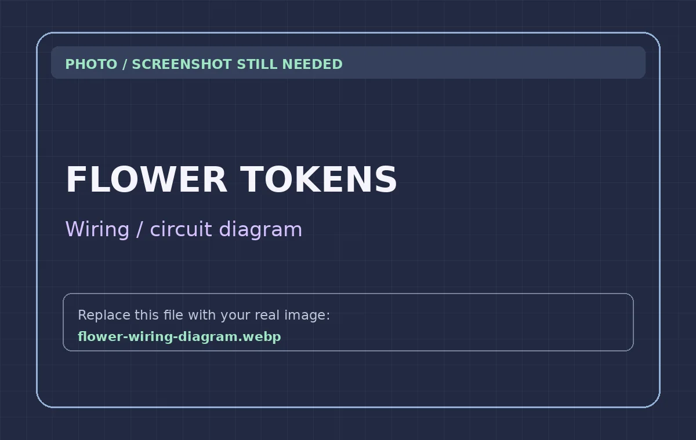

Designed for actual components
Used OpenSCAD to make separate shell halves with internal cavities, alignment features, access for the USB port and switch, plus decorative lighting details.
Personal build / ESP32-C3 / 2026
I wanted to make a gift that felt personal and worked like real hardware. I ended up designing, printing, soldering, and programming two handheld wireless devices that send light-and-vibration signals to each other.

01 / why I made them
The goal was simple to explain but much harder to build: two separate tokens that can tell each other “I'm thinking of you” without needing to be in the same room.
Each token connects to Wi-Fi and communicates through MQTT. Sending a message triggers the other token's LEDs and vibration motor. The enclosures are small enough to hold, with a touch area, a power switch, and a place for the electronics to live.
I liked that this project forced me to think about everything at once: wireless communication, power, physical fit, component protection, and making the finished object actually nice to hold.
02 / engineering decisions
I started with the available parts, then adjusted the mechanical design around the electronics rather than treating packaging as an afterthought.
Used OpenSCAD to make separate shell halves with internal cavities, alignment features, access for the USB port and switch, plus decorative lighting details.
Integrated WS2812B addressable LEDs, a small motor driven through a transistor and flyback diode, and a copper-tape input pad with a pull-down resistor.
Programmed ESP32-C3 boards to send and receive messages over Wi-Fi/MQTT and trigger visual and tactile feedback on receipt.



03 / what took the most debugging
Early overlapping strips of copper tape gave me unreliable behavior. I reworked the contact area into a single pad, checked the electrical connection, and used a 1 MΩ pull-down resistor on the input.
LEDs, motor, battery, switch, and wires all needed room, and the case had to close without pinching anything. I used careful positioning, insulation, and strain relief while doing repeated open-case and closed-case checks.
Debugging didn't end when the MQTT console printed that a message was received. The real test was whether the opposite physical token lit up and vibrated while assembled.

04 / proof it works
In this clip, the completed devices respond with their addressable LEDs. The video is deliberately short so the result is easy to see.
Packaging, wiring, and firmware are not separate problems when the project has to fit in your hand. This was my first time having to solve all of them together and still make the result look like something I'd want to give someone.
05 / design files to add
These are labeled placeholders, not images of results. When I export the CAD and wiring diagrams, I can replace the placeholder files without changing this page's code.

One project, a lot of small victories